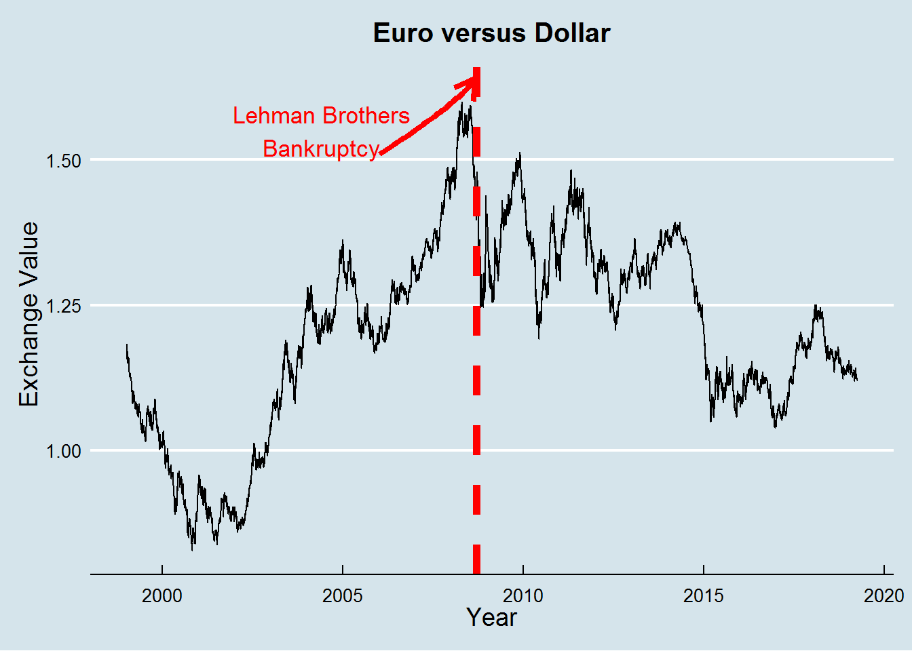

Euro vs Dollar: Working with Lubridate and some other packages
Welcome to this new post about the Euro versus Dollar historical exchange rate since 1999 to the present day. This post will deal with dates, so I will use mainly the lubridate package and some of its most important functions. I will do my best to show you the power and simplicity of this truly magnificent tool within the R universe. Nevertheless, I won’t be restricted only to lubridate and will use some other packages to deal with this type of data.
Let us begin again by loading the packages that we will use throughout this post:
# load libraries
library(lubridate) # dealing with dates and times
library(readxl) # open excel files
library(xts) # dealing with time series
library(tidyverse) # wrangling, data iteration and visualization
library(here) # create a file directory
library(kableExtra) # visualize html tables
library(scales) # create different scale values(percent, commas, etc...)
library(zoo) # deal with time-series data
library(ggthemes) # add themes to ggplot2Now we can load our file with the historical exchange rate of euro versus dollar.
# load file
euro_vs_dollar <- read_excel(here::here("euro-dollar-exchange-rate-historical-chart.xlsx"), skip = 13) # skip the first 13 empty lines of the csv fileWe can now explore our data frame, being possible to check the first cases of our data frame:
euro_vs_dollar %>%
head(20) %>% # only the first 20 rows
kable() | date | value |
|---|---|
| 1999-01-04 | 1.1825 |
| 1999-01-05 | 1.1774 |
| 1999-01-06 | 1.1622 |
| 1999-01-07 | 1.1706 |
| 1999-01-08 | 1.1577 |
| 1999-01-11 | 1.1498 |
| 1999-01-12 | 1.1564 |
| 1999-01-13 | 1.1663 |
| 1999-01-14 | 1.1700 |
| 1999-01-15 | 1.1553 |
| 1999-01-19 | 1.1605 |
| 1999-01-20 | 1.1557 |
| 1999-01-21 | 1.1591 |
| 1999-01-22 | 1.1585 |
| 1999-01-25 | 1.1549 |
| 1999-01-26 | 1.1560 |
| 1999-01-27 | 1.1423 |
| 1999-01-28 | 1.1412 |
| 1999-01-29 | 1.1357 |
| 1999-02-01 | 1.1298 |
And the last ones:
euro_vs_dollar %>%
tail(20) %>% # only the first 20 rows
kable() | date | value |
|---|---|
| 2019-03-13 | 1.1336 |
| 2019-03-14 | 1.1307 |
| 2019-03-15 | 1.1344 |
| 2019-03-16 | 1.1344 |
| 2019-03-18 | 1.1335 |
| 2019-03-19 | 1.1353 |
| 2019-03-20 | 1.1423 |
| 2019-03-21 | 1.1377 |
| 2019-03-22 | 1.1320 |
| 2019-03-23 | 1.1320 |
| 2019-03-25 | 1.1315 |
| 2019-03-26 | 1.1275 |
| 2019-03-27 | 1.1250 |
| 2019-03-28 | 1.1255 |
| 2019-03-29 | 1.1232 |
| 2019-03-30 | 1.1232 |
| 2019-04-01 | 1.1209 |
| 2019-04-02 | 1.1204 |
| 2019-04-03 | 1.1242 |
| 2019-04-04 | 1.1233 |
From this first data exploration, we can see that the euro devalued against the dollar since its inception. The initial value of 1 euro was 1.1825 dollars and today is 1.1233 dollars.
Now, let’s play with the data. First, we’ll glimpse it.
glimpse(euro_vs_dollar)## Observations: 5,224
## Variables: 2
## $ date <dttm> 1999-01-04, 1999-01-05, 1999-01-06, 1999-01-07, 1999-01...
## $ value <dbl> 1.1825, 1.1774, 1.1622, 1.1706, 1.1577, 1.1498, 1.1564, ...So, we have two variables, date and the correspondent value of the exchange rate. The date variable is with the format YYYY-MM-DD (i.e. 1999-01-04). We’ll now change formats in the date variable to play with a couple of functions from lubridate.
# create new data frame
euro_dollar_parse <- euro_vs_dollar %>%
# change to character variable to work afterwards with lubridate functions
mutate(date = as.character(date),
# change the format of some values in the date variable
date = case_when(date == "1999-01-04" ~ "January 4, 1999",
date == "2018-12-31" ~ "31st December 2018",
date == "2017-07-12" ~ "2017, 12th July",
TRUE ~ date))
glimpse(euro_dollar_parse)## Observations: 5,224
## Variables: 2
## $ date <chr> "January 4, 1999", "1999-01-05", "1999-01-06", "1999-01-...
## $ value <dbl> 1.1825, 1.1774, 1.1622, 1.1706, 1.1577, 1.1498, 1.1564, ...Now that the format of the date variable was changed,we have four different formats in this respective order: month(m), day(d), year(y); year(y), month(m), day(d); day(d), month(m), year(y); and year(y), day(d), month(m). How can we parse all these values with different formats in R? The function parse_date_time is the answer .
euro_vs_dollar_tbl <- euro_dollar_parse %>%
# parse the four different formats of the date variable
mutate(date = parse_date_time(date, c("mdy", "ymd", "dmy", "ydm")))
glimpse(euro_vs_dollar_tbl) ## Observations: 5,224
## Variables: 2
## $ date <dttm> 1999-01-04, 1999-01-05, 1999-01-06, 1999-01-07, 1999-01...
## $ value <dbl> 1.1825, 1.1774, 1.1622, 1.1706, 1.1577, 1.1498, 1.1564, ...As you could see in the code above, we used the functions mdy, ymd, dmy and ydm to parse the different types of formats.
Now, we should transform the date variable which is a date time object in a date object with the ymd() function.
euro_vs_dollar_tbl <- euro_vs_dollar_tbl %>%
mutate(date = ymd(date))
glimpse(euro_vs_dollar_tbl)## Observations: 5,224
## Variables: 2
## $ date <date> 1999-01-04, 1999-01-05, 1999-01-06, 1999-01-07, 1999-01...
## $ value <dbl> 1.1825, 1.1774, 1.1622, 1.1706, 1.1577, 1.1498, 1.1564, ...We can again play with more lubridate functions. We will create the variables year, month, day of the month, day of the week, day of the year, and quarter of the year with these respective functions: year(), month, day(), wday(), yday(), and quarter().
euro_vs_dollar_tbl <- euro_vs_dollar_tbl %>%
mutate(# variable year
year = year(date),
# variable month with the label
month = month(date, label = TRUE),
# variable day of the month
day = day(date),
# variable day of the week with abbreviated label
week_day = wday(date, label = TRUE, abbr = TRUE),
# variable day of the year
day_year = yday(date),
# variable quarter
qter = quarter(date))
euro_vs_dollar_tbl %>%
head(25) %>%
kable()| date | value | year | month | day | week_day | day_year | qter |
|---|---|---|---|---|---|---|---|
| 1999-01-04 | 1.1825 | 1999 | jan | 4 | seg | 4 | 1 |
| 1999-01-05 | 1.1774 | 1999 | jan | 5 | ter | 5 | 1 |
| 1999-01-06 | 1.1622 | 1999 | jan | 6 | qua | 6 | 1 |
| 1999-01-07 | 1.1706 | 1999 | jan | 7 | qui | 7 | 1 |
| 1999-01-08 | 1.1577 | 1999 | jan | 8 | sex | 8 | 1 |
| 1999-01-11 | 1.1498 | 1999 | jan | 11 | seg | 11 | 1 |
| 1999-01-12 | 1.1564 | 1999 | jan | 12 | ter | 12 | 1 |
| 1999-01-13 | 1.1663 | 1999 | jan | 13 | qua | 13 | 1 |
| 1999-01-14 | 1.1700 | 1999 | jan | 14 | qui | 14 | 1 |
| 1999-01-15 | 1.1553 | 1999 | jan | 15 | sex | 15 | 1 |
| 1999-01-19 | 1.1605 | 1999 | jan | 19 | ter | 19 | 1 |
| 1999-01-20 | 1.1557 | 1999 | jan | 20 | qua | 20 | 1 |
| 1999-01-21 | 1.1591 | 1999 | jan | 21 | qui | 21 | 1 |
| 1999-01-22 | 1.1585 | 1999 | jan | 22 | sex | 22 | 1 |
| 1999-01-25 | 1.1549 | 1999 | jan | 25 | seg | 25 | 1 |
| 1999-01-26 | 1.1560 | 1999 | jan | 26 | ter | 26 | 1 |
| 1999-01-27 | 1.1423 | 1999 | jan | 27 | qua | 27 | 1 |
| 1999-01-28 | 1.1412 | 1999 | jan | 28 | qui | 28 | 1 |
| 1999-01-29 | 1.1357 | 1999 | jan | 29 | sex | 29 | 1 |
| 1999-02-01 | 1.1298 | 1999 | fev | 1 | seg | 32 | 1 |
| 1999-02-02 | 1.1339 | 1999 | fev | 2 | ter | 33 | 1 |
| 1999-02-03 | 1.1300 | 1999 | fev | 3 | qua | 34 | 1 |
| 1999-02-04 | 1.1328 | 1999 | fev | 4 | qui | 35 | 1 |
| 1999-02-05 | 1.1259 | 1999 | fev | 5 | sex | 36 | 1 |
| 1999-02-08 | 1.1324 | 1999 | fev | 8 | seg | 39 | 1 |
Let us imagine that we had only the year, month, and day variables in our data frame. We could turn these three variables into a date variable with the make_date function.
euro_vs_dollar_tbl %>%
mutate(new_year_var = make_date(
year = year,
month = month,
day = day)) %>%
select(new_year_var, everything())## # A tibble: 5,224 x 9
## new_year_var date value year month day week_day day_year qter
## <date> <date> <dbl> <dbl> <ord> <int> <ord> <dbl> <int>
## 1 1999-01-04 1999-01-04 1.18 1999 jan 4 seg 4 1
## 2 1999-01-05 1999-01-05 1.18 1999 jan 5 ter 5 1
## 3 1999-01-06 1999-01-06 1.16 1999 jan 6 qua 6 1
## 4 1999-01-07 1999-01-07 1.17 1999 jan 7 qui 7 1
## 5 1999-01-08 1999-01-08 1.16 1999 jan 8 sex 8 1
## 6 1999-01-11 1999-01-11 1.15 1999 jan 11 seg 11 1
## 7 1999-01-12 1999-01-12 1.16 1999 jan 12 ter 12 1
## 8 1999-01-13 1999-01-13 1.17 1999 jan 13 qua 13 1
## 9 1999-01-14 1999-01-14 1.17 1999 jan 14 qui 14 1
## 10 1999-01-15 1999-01-15 1.16 1999 jan 15 sex 15 1
## # ... with 5,214 more rowsA question about the Euro currency age could be raised. . How long has the Euro been alive? We can start to answer this by computing the first and the last date in our data frame with the first() and last() functions of the xts package.
euro_vs_dollar_tbl <- euro_vs_dollar_tbl %>%
mutate(first_date = xts::first(date),
last_date = xts::last(date))Now with the interval function from the lubridate package we can compute how many days has the Euro currency.
euro_vs_dollar_tbl <- euro_vs_dollar_tbl %>%
# create euro_life variable
mutate(euro_life = interval(first_date, last_date) / ddays(1))
euro_vs_dollar_tbl$euro_life[1]## [1] 7395So, the Euro currency has been in circulation for 7395 days.
We could also be interested in checking the difference in value of the Euro against the Dollar since its inception to today. Again, we can subtract the first value of the exchange value from the last value with the first and last functions.
euro_vs_dollar_tbl <- euro_vs_dollar_tbl %>%
mutate(first_value = xts::first(value),
last_value = xts::last(value),
diff_value = last_value - first_value)
euro_vs_dollar_tbl$diff_value[1]## [1] -0.0592The difference is of -0.0592.
Let us turn this into a percentage rate:
euro_vs_dollar_tbl <- euro_vs_dollar_tbl %>%
mutate(
# create difference in value
dif = diff_value / first_value,
# create difference in value in terms of percentage
perc_dif = scales::percent(dif))
euro_vs_dollar_tbl$perc_dif[1]## [1] "-5.01%"We can say that the Euro devalued 5.01% against the Dollar since its beginning.
We can continue with other functions from the lubridate package such as floor_date, round_date, and ceiling_date; floor_date will turn the date variable into the nearest boundary value. For instance, a date value such as 2012-02-28 will turn into 2012-02-01; round_date turns a date variable to its nearest value. So, the date of 2012-01-13 will be turned into 2012-01-01, while the date of 2012-01-17 will be turned into 2012-02-01: ceiling_date will round a date object into the nearest value above, so that, a date 1999-01-04 will turn into 1999-02-01.
euro_vs_dollar_tbl %>%
mutate(
floor_d = floor_date(date, "months"),
round_d = round_date(date, "months"),
ceiling_d = ceiling_date(date, "months")
) %>%
select(
date, floor_d, round_d, ceiling_d) %>%
head(20) %>%
kable()| date | floor_d | round_d | ceiling_d |
|---|---|---|---|
| 1999-01-04 | 1999-01-01 | 1999-01-01 | 1999-02-01 |
| 1999-01-05 | 1999-01-01 | 1999-01-01 | 1999-02-01 |
| 1999-01-06 | 1999-01-01 | 1999-01-01 | 1999-02-01 |
| 1999-01-07 | 1999-01-01 | 1999-01-01 | 1999-02-01 |
| 1999-01-08 | 1999-01-01 | 1999-01-01 | 1999-02-01 |
| 1999-01-11 | 1999-01-01 | 1999-01-01 | 1999-02-01 |
| 1999-01-12 | 1999-01-01 | 1999-01-01 | 1999-02-01 |
| 1999-01-13 | 1999-01-01 | 1999-01-01 | 1999-02-01 |
| 1999-01-14 | 1999-01-01 | 1999-01-01 | 1999-02-01 |
| 1999-01-15 | 1999-01-01 | 1999-01-01 | 1999-02-01 |
| 1999-01-19 | 1999-01-01 | 1999-02-01 | 1999-02-01 |
| 1999-01-20 | 1999-01-01 | 1999-02-01 | 1999-02-01 |
| 1999-01-21 | 1999-01-01 | 1999-02-01 | 1999-02-01 |
| 1999-01-22 | 1999-01-01 | 1999-02-01 | 1999-02-01 |
| 1999-01-25 | 1999-01-01 | 1999-02-01 | 1999-02-01 |
| 1999-01-26 | 1999-01-01 | 1999-02-01 | 1999-02-01 |
| 1999-01-27 | 1999-01-01 | 1999-02-01 | 1999-02-01 |
| 1999-01-28 | 1999-01-01 | 1999-02-01 | 1999-02-01 |
| 1999-01-29 | 1999-01-01 | 1999-02-01 | 1999-02-01 |
| 1999-02-01 | 1999-02-01 | 1999-02-01 | 1999-03-01 |
Another interesting function to deal with dates is the lag function from the dplyr package where a new variable with the correspondent previous value of the variable of interest can be created. In our case, we can see how the exchange rate evolves daily by creating this lag variable and subtracting from the value of the exchange rate. Then, check if its evolution varies positively or negatively on a daily basis .
euro_vs_dollar_tbl %>%
mutate(lag_value =lag(value, n =1)) %>%
mutate(lag_value = case_when(is.na(lag_value) ~ value,
TRUE ~ lag_value),
diff_lag = value - lag_value) %>%
select(date, value, lag_value, diff_lag) %>%
head(10) %>%
kable()| date | value | lag_value | diff_lag |
|---|---|---|---|
| 1999-01-04 | 1.1825 | 1.1825 | 0.0000 |
| 1999-01-05 | 1.1774 | 1.1825 | -0.0051 |
| 1999-01-06 | 1.1622 | 1.1774 | -0.0152 |
| 1999-01-07 | 1.1706 | 1.1622 | 0.0084 |
| 1999-01-08 | 1.1577 | 1.1706 | -0.0129 |
| 1999-01-11 | 1.1498 | 1.1577 | -0.0079 |
| 1999-01-12 | 1.1564 | 1.1498 | 0.0066 |
| 1999-01-13 | 1.1663 | 1.1564 | 0.0099 |
| 1999-01-14 | 1.1700 | 1.1663 | 0.0037 |
| 1999-01-15 | 1.1553 | 1.1700 | -0.0147 |
A very useful function is also the rollmean from the zoo package. With this function you can see how an average of a specific variable moves over time. In our example, we will use rollmean to see how the exchange value changes in 5 consecutive days. .
euro_vs_dollar_tbl %>%
mutate(sum_five_d = zoo::rollmean(value,
k = 5, na.pad = TRUE,
align = "right")) %>%
replace_na(., list(sum_five_d = 0)) %>%
select(date, value, sum_five_d) %>%
head(10) %>%
kable()| date | value | sum_five_d |
|---|---|---|
| 1999-01-04 | 1.1825 | 0.00000 |
| 1999-01-05 | 1.1774 | 0.00000 |
| 1999-01-06 | 1.1622 | 0.00000 |
| 1999-01-07 | 1.1706 | 0.00000 |
| 1999-01-08 | 1.1577 | 1.17008 |
| 1999-01-11 | 1.1498 | 1.16354 |
| 1999-01-12 | 1.1564 | 1.15934 |
| 1999-01-13 | 1.1663 | 1.16016 |
| 1999-01-14 | 1.1700 | 1.16004 |
| 1999-01-15 | 1.1553 | 1.15956 |
Therefore, the value 1.17008 in sum_five_d variable corresponds to the average values of the first five days: 1.1825, 1.1774, 1.1622, 1.1706, and 1.1577; the value 1.16354 to the average value of 1.1774, 1.1622, 1.1706, 1.1577 and 1.1498., and so on. This function is a great way to see how averages move across time.
The last function we will talk about, is the %m+% function. Imagine that we would like to know the exchange value of the Euro versus the dollar one month after a certain date. In this scenario, we wanted to know the exchange rate one month after the following date “2007-07-20”. We can add one month using the %m+% function.
euro_vs_dollar_tbl %>%
filter(date == ymd("2007-07-20") %m+% months(1)) %>%
summarize(value_month_after = mean(value))## # A tibble: 1 x 1
## value_month_after
## <dbl>
## 1 1.35To finalize, we will create a simple plot with the exchange value of Euro against the dollar across time.
euro_vs_dollar_tbl %>%
group_by(date) %>%
ggplot(aes(x = date, y = value)) +
geom_line() +
geom_vline(xintercept = as.Date("2008-09-15"), size = 2, lty = "dashed",
color = "red") +
geom_curve(aes(x = as.Date("2006-01-01"), y = 1.51,
xend = as.Date("2008-09-01"),
yend = 1.64), size = 2, color = "red",
curvature = 0.3, angle = 165,
arrow = arrow(length = unit(0.45,"cm"))) +
annotate("text", x = as.Date("2004-10-01"), color = "red", y = 1.55, size = 6.25,label = "Lehman Brothers\nBankruptcy") +
ggthemes::theme_economist() +
labs(title = "Euro versus Dollar", y = "Exchange Value", x =
"Year") +
theme(plot.title = element_text(hjust = 0.5),
axis.title = element_text(size = 14))
Conclusion
Hope you liked this short introduction on how to deal with dates in R. There is much more to R,, though hopefully this was a useful post. . Keep having fun while coding!